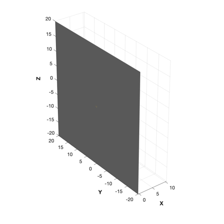
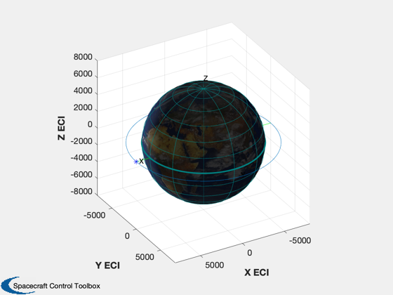
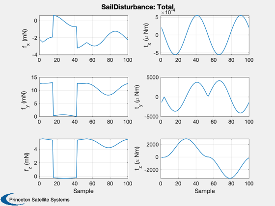
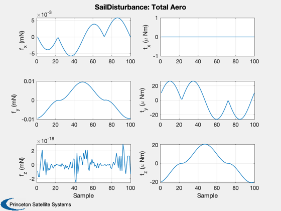
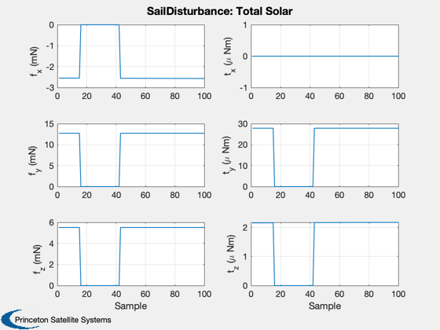
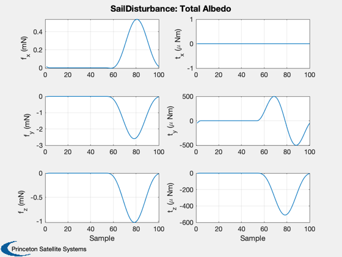
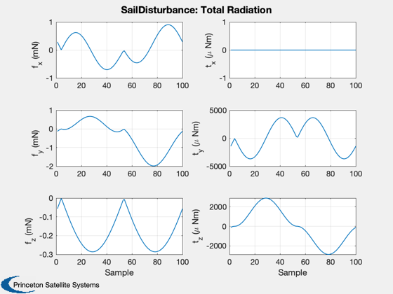
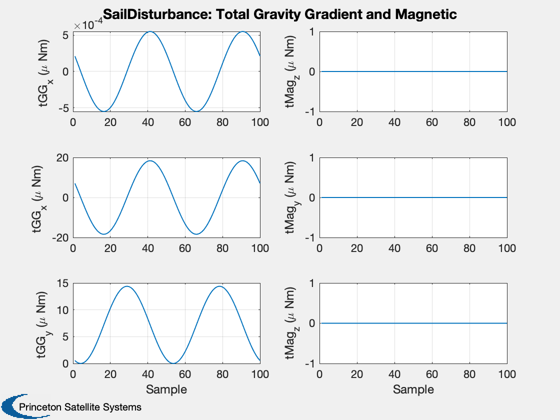

Demonstrate the solar sail disturbance model in Earth orbit.
The orbit is a circular equatorial orbit at 8000 km around the Earth. The sail is always sun-pointing. This demo is the same as the built-in demo in SailDisturbance.
Functions demonstrated:
QSunPointing
SailDisturbance
Since version 7. ------------------------------------------------------------------------ See also DrawSCPlanPlugIn, Constant, JD2000, JD2T, Period, PltOrbit, Planets, QSunPointing, SolarSys, SunV1, DisturbanceStruct, EnvironmentStruct, ProfileStruct, SailDisturbance, SailEnvironment ------------------------------------------------------------------------
Contents
- Load the sail model
- Create the profile
- Parameters for the orbit. We are creating a circular orbit.
- Default profile data structure
- Range of Julian dates
- Orbit vector
- Velocity vector
- Quaternion (always sun pointing)
- core and the boom. The core is defined as body 1 in the CAD file
- Earth orbit around the sun
- Create the data structure
- Get default structure for disturbances and environment
- Turn on aerodynamics
- Turn on Earth albedo
- Turn on solar
- Turn on magnetic torques
- Turn on earth radiation
- Turn on gravity gradient
- field models or atmospheric density models.
- Use the dipole magnetic field model
- Use the exponential atmospheric density model
- control structure )
%------------------------------------------------------------------------------- % Copyright (c) 2005 Princeton Satellite Systems, Inc. % All rights reserved. %------------------------------------------------------------------------------- clear SailDisturbance %--------------------
Load the sail model
%-------------------- g = load('SailWithBoom.mat'); DrawSCPlanPlugIn('initialize',g); %-------------------
Create the profile
%-------------------
Parameters for the orbit. We are creating a circular orbit.
%------------------------------------------------------------ a = linspace(0,2*pi); r = 8000; % Radius in km n = length(a); mu = Constant('mu earth');
Default profile data structure
%-------------------------------
p = ProfileStruct;
Range of Julian dates
%----------------------
p.jD = linspace(0,Period(r))/86400 + JD2000;
Orbit vector
%------------- p.r = r*[cos(a);sin(a);zeros(1,n)]; PltOrbit( [r 0 0 0 0 0], p.jD(1) ); hold on; plot3(p.r(1,1),p.r(2,1),p.r(3,1),'b*')
Velocity vector
%----------------
p.v = sqrt(mu/r)*[sin(a);cos(a);zeros(1,n)];
Quaternion (always sun pointing)
%---------------------------------- p.q = QSunPointing( SunV1( p.jD, p.r ) ); % Gimbal angles. The sail is two body with a gimbaled boom % The first angle is the one nearest the core % The axes correspond to the angles % The body array says each gimbal is at the joint between the
core and the boom. The core is defined as body 1 in the CAD file
%-----------------------------------------------------------------
p.angle = zeros(2,n);
p.axis = [1 0;0 1;0 0];
p.body = [2 2];
Earth orbit around the sun
%--------------------------- [planet, aP, eP, iP, WP, wP, LP, jDRefP] = Planets( 'rad', 'Earth' ); [rX0, rY0, rZ0] = SolarSys( iP, WP, wP, aP, eP, LP, planet, jDRefP, JD2T( p.jD ) ); p.rPlanetH = Constant('au')*[rX0;rY0;rZ0]; %--------------------------
Create the data structure
%--------------------------
Get default structure for disturbances and environment
%-------------------------------------------------------
d = DisturbanceStruct;
d = EnvironmentStruct( d );
Turn on aerodynamics
%---------------------
d.aeroOn = 1.0;
Turn on Earth albedo
%----------------------
d.albedoOn = 1.0;
Turn on solar
%--------------
d.solarOn = 1.0;
Turn on magnetic torques
%-------------------------
d.magOn = 1.0;
Turn on earth radiation
%------------------------
d.radOn = 1.0;
Turn on gravity gradient
%------------------------- d.ggOn = 1.0; % Orbiting the earth. SailDisturbance can handle any planet or % a heliocentric orbit. However, not all planets have magnetic
field models or atmospheric density models.
%------------------------------------------------------------- d.planet = 'Earth';
Use the dipole magnetic field model
%------------------------------------ d.magModel = 'BDipole';
Use the exponential atmospheric density model
%---------------------------------------------- d.atmModel = 'AtmDens2'; % Compute the disturbances. It will automatically plot the results. % The inputs are ( cad model, profile structure, environment, function
control structure )
%---------------------------------------------------------------------------- e = SailEnvironment( d.planet, p, d ); SailDisturbance( g, p, e, d ); %-------------------------------------- % PSS internal file version information %--------------------------------------     